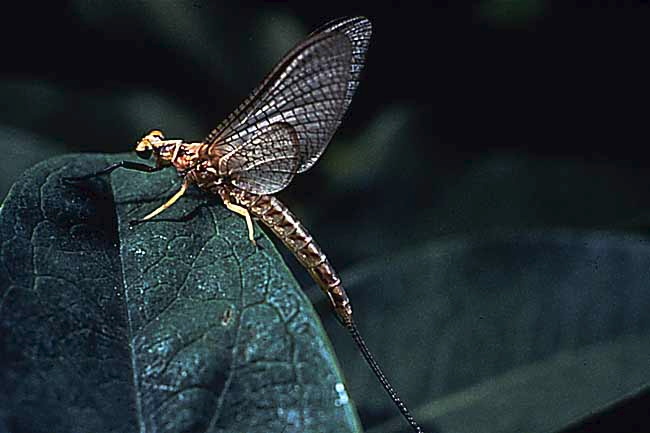
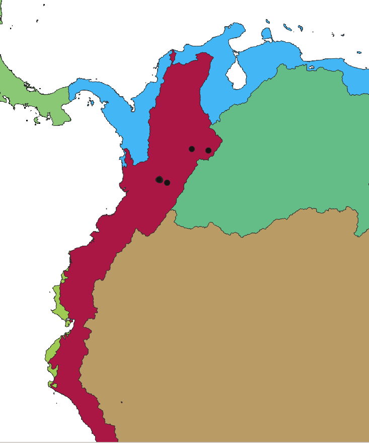
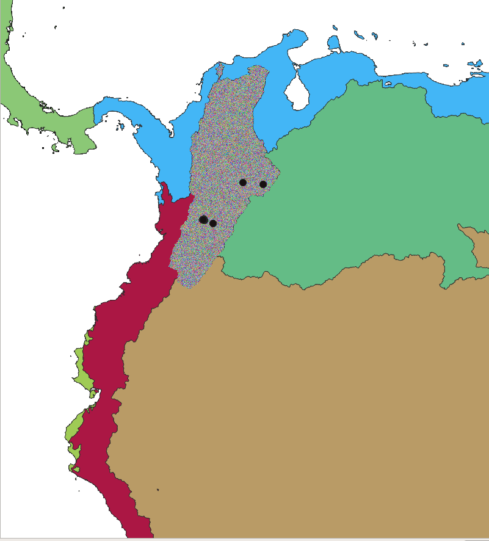
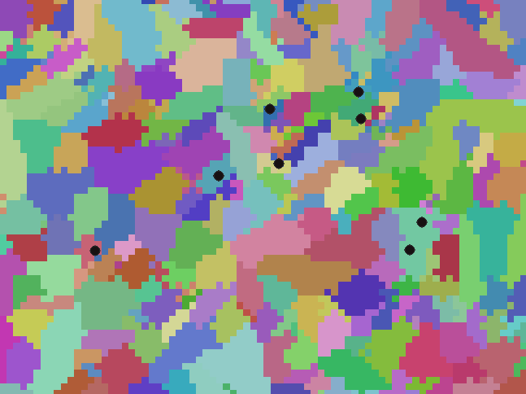
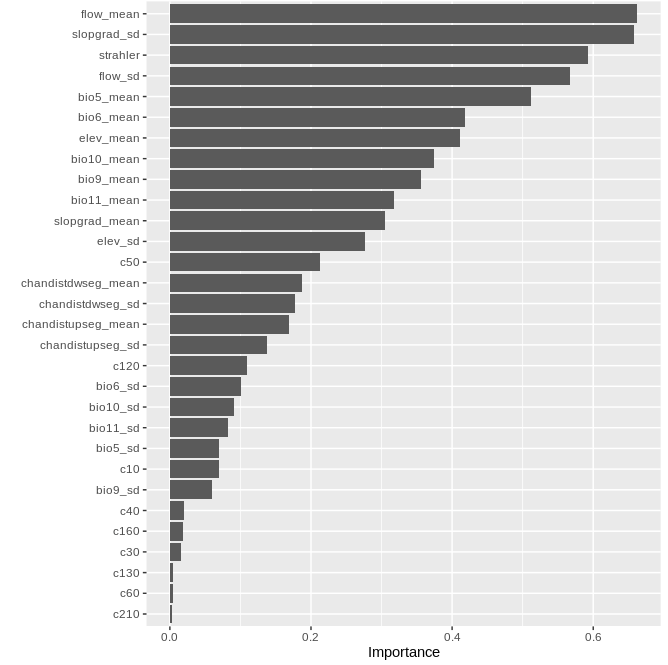
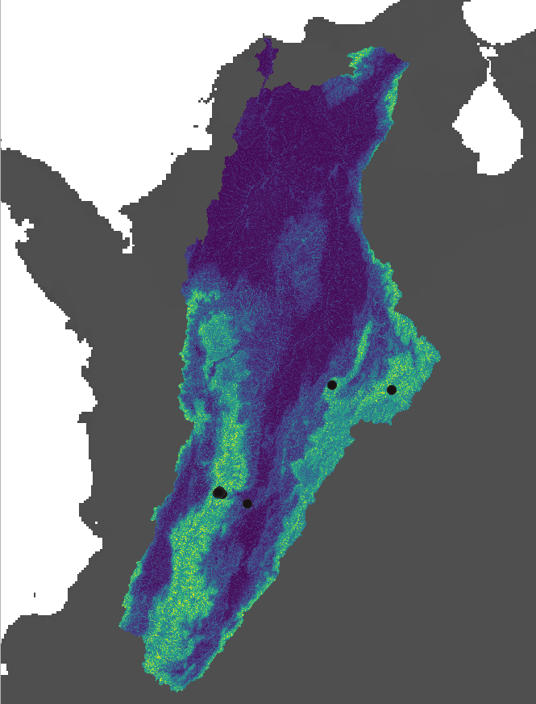

2.6. Afroditi Grigoropoulou: Species Distribution Model with Random Forest
2.6.1. Taxon: genus Prebaetodes (Mayfly), occurring in a drainage basin in Colombia
2.6.2. Goal: Predict which subcatchments provide suitable habitats for this genus
2.6.3. Classify the subcatchments of the basin as 1 or 0, based on whether their habitat is suitable or not
2.6.4. Random forest classification
2.6.4.1. 1. Extract predictors for each subcatchment of this drainage basin
2.6.4.2. 2. Extract the predictors for the subcatchment where the genus occurs, plus for 10,000 random subcatchments that will serve as pseudoabsence data
2.6.4.3. 3. Run SDM with random forest

(https://ucmp.berkeley.edu/arthropoda/uniramia/ephemeroptera/mayfly.jpg)
2.6.5. 1. Extract predictors for each subcatchment of this drainage basin
Set paths of output and input directory
export WDIR=xx
export CUDIR=xx
mkdir $WDIR/subc
Visualize species dataset
head -5 $WDIR/taxa/Prebaetodes_points.csv
# order_ID dataset_ID occurrence_ID genus family longitude latitude country year subcatchment_ID basin_ID CU elevation
# E 051 000647545 Prebaetodes Baetidae -73.847944 6.0235 COL 2016 426156707 514490 33 1833.1
# E 051 000668399 Prebaetodes Baetidae -72.9787 5.94842 COL 2018 426173837 514490 33 3193.5
# E 051 000668413 Prebaetodes Baetidae -72.97908 5.94863 COL 2018 426173837 514490 33 3193.5
# E 051 001118376 Prebaetodes Baetidae -75.48049 4.45153 COL 2013 426478538 514490 33 2389.9
Define Computational Unit (CU)
export CU=$(awk -F'\t' 'FNR>1 {print $12}' $WDIR/taxa/Prebaetodes_points.csv | sort | uniq)
echo CU $CU
# CU 33
2.6.6. Computational unit

Define basin
export BASIN=$(awk -F'\t' 'FNR>1 {print $11}' $WDIR/taxa/*.csv | sort | uniq)
echo BASIN $BASIN
# BASIN 514490
2.6.7. Basin

echo CU $CU BASIN $BASIN
# CU 33 BASIN 514490
2.6.8. Subcatchments

Inspect bioclim statistics file
head -5 $CUDIR/CU_${CU}/out/stats_${CU}_bio5.txt
# subcID min max range mean sd
# 425395915 3018 3018 0 3018 0
# 425395916 3018 3018 0 3018 0
# 425395917 3018 3018 0 3018 0
# 425395918 3017 3019 2 3017.5393258427 0.520504935526613
Each row corresponds to a subcatchment. We need to extract only the subcatchments belonging to the basin 514490
Inspect file with subcatchment and basin IDs
head -2 $CUDIR/CU_${CU}/out/stats_${CU}_BasinsIDs.txt
# subcID X Y MacrobasinID
# 425395915 -74.8245833333333 11.0579166666667 514490
# 425395916 -74.82125 11.0570833333333 514490
tail 2 $CUDIR/CU_${CU}/out/stats_${CU}_BasinsIDs.txt
# 428235083 -75.4554166666667 -14.99375 504121
# 428235084 -75.4479166666667 -14.9929166666667 485074
A computational unit includes many basins. We need to extract the subcatchments of only 1 basin.
First extract all the subcatchment IDs of the given basin, based on the basin ID
grep -w $BASIN $CUDIR/CU_${CU}/out/stats_${CU}_BasinsIDs.txt | awk '{print $1}' \
> $WDIR/subc/CU_${CU}_basin_${BASIN}_subc.txt
See output file of subcatchment ids
head -5 $WDIR/subc/CU_${CU}_basin_${BASIN}_subc.txt
# 425395915
# 425395916
# 425395917
# 425395918
# 425395919
Identify number of subcatchments in the basin 514490
wc -l $WDIR/subc/CU_${CU}_basin_${BASIN}_subc.txt
# 1278276
Define the path of the file including the subcatchment IDs as a variable. We are going to use this file to extract the predictors for all the subcathcments of the Magdalena basin
export SUBCFILE=$WDIR/subc/CU_${CU}_basin_${BASIN}_subc.txt
2.6.9. Extract BIOCLIM data
See files
ls $CUDIR/CU_${CU}/out/stats*bio*.txt | xargs -n 1 basename | head
# stats_33_bio10.txt
# stats_33_bio11.txt
# stats_33_bio12.txt
# stats_33_bio13.txt
# stats_33_bio14.txt
# stats_33_bio15.txt
# stats_33_bio16.txt
# stats_33_bio17.txt
# stats_33_bio18.txt
# stats_33_bio19.txt
Inspect bioclim statistics file
head -5 $CUDIR/CU_${CU}/out/stats_${CU}_bio5.txt
# subcID min max range mean sd
# 425395915 3018 3018 0 3018 0
# 425395916 3018 3018 0 3018 0
# 425395917 3018 3018 0 3018 0
# 425395918 3017 3019 2 3017.5393258427 0.520504935526613
Create output directory
mkdir $WDIR/bioclim
grep -W matches exact pattern, -f searches based on patterns given by a file
for ibio in {5,6,9,10,11} ; do
grep -wFf $SUBCFILE $CUDIR/CU_${CU}/out/stats_${CU}_bio${ibio}.txt \
> $WDIR/bioclim/stats_CU_${CU}_basin_${BASIN}_bio${ibio}.txt
## insert header
sed -i "1 i$(head -1 $CUDIR/CU_${CU}/out/stats_${CU}_bio${ibio}.txt)" $WDIR/bioclim/stats_CU_${CU}_basin_${BASIN}_bio${ibio}.txt
done
check output file
head -5 $WDIR/bioclim/stats_CU_${CU}_basin_${BASIN}_bio5.txt
# subcID bio5_min bio5_max bio5_range bio5_mean bio5_sd
# 425395915 3018 3018 0 3018 0
# 425395916 3018 3018 0 3018 0
# 425395917 3018 3018 0 3018 0
# 425395918 3017 3019 2 3017.5393258427 0.520504935526613
Same procedure but with xargs
for ibio in 5 6 9 10 11 ; do
echo $ibio
done > $WDIR/biovars_xargs.txt
cat $WDIR/biovars_xargs.txt
# 5
# 6
# 9
# 10
# 11
cat $WDIR/biovars_xargs.txt | xargs -n 1 -P 5 bash -c $'
ibio=$1
echo "subcID" bio${ibio}_min bio${ibio}_max bio${ibio}_range bio${ibio}_mean bio${ibio}_sd > $WDIR/bioclim/stats_CU_${CU}_basin_${BASIN}_bio${ibio}.txt
grep -wFf $SUBCFILE $CUDIR/CU_${CU}/out/stats_${CU}_bio${ibio}.txt >> $WDIR/bioclim/stats_CU_${CU}_basin_${BASIN}_bio${ibio}.txt
' _
wc -l $WDIR/bioclim/*
# 1278277 /home/ag2688/project/GC_2022//bioclim/stats_CU_33_basin_514490_bio10.txt
# 1278277 /home/ag2688/project/GC_2022//bioclim/stats_CU_33_basin_514490_bio11.txt
# 1278277 /home/ag2688/project/GC_2022//bioclim/stats_CU_33_basin_514490_bio5.txt
# 1278277 /home/ag2688/project/GC_2022//bioclim/stats_CU_33_basin_514490_bio6.txt
# 1278277 /home/ag2688/project/GC_2022//bioclim/stats_CU_33_basin_514490_bio9.txt
2.6.10. Extract land cover mean proportion per subcatchment
Inspect file
head -5 $CUDIR/CU_${CU}/out/mean_LCprop_${CU}.txt
# subcID c100 c10 c110 c120 c130 c140 c150 c160 c170 c180 c190 c200 c20 c210 c220 c30 c40 c50 c60 c70 c80 c90
# 425395915 0 0 0 0 0 0 0 0 0.256098 0 0 0 0 0.365854 0 0 0.0121951 0.365854 0 0 0 0
# 425395916 0 0 0 0 0 0 0 0 0.509524 0 0 0 0 0.128571 0 0 0.0904762 0.271429 0 0 0 0
# 425395917 0 0 0 0 0 0 0 0 0.333333 0 0 0.0641026 0 0.602564 0 0 0 0 0 0 0 0
# 425395918 0 0 0 0 0 0 0 0 0.91469 0 0 0 0 0.011236 0 0 0.0740741 0 0 0 0 0
create output directory
mkdir $WDIR/LC
Create output file by first inserting the header
echo $(head -1 $CUDIR/CU_${CU}/out/mean_LCprop_${CU}.txt) > $WDIR/LC/stats_CU_${CU}_basin_${BASIN}_mean_LCprop.txt
Extract the land cover values per subcatchment
```sh
grep -wFf $SUBCFILE $CUDIR/CU_${CU}/out/mean_LCprop_${CU}.txt \
>> $WDIR/LC/stats_CU_${CU}_basin_${BASIN}_mean_LCprop.txt
2.6.11. Extract mean and sd of elevation, flow accumulation and slope gradient per subcatchment
Inspect tables
head -5 $CUDIR/CU_${CU}/out/stats_${CU}_streamorder.txt
# subcID next_stream prev_str01 prev_str02 prev_str03 prev_str04 strahler horton shreve hack topo_dim scheidegger drwal_old length stright sinosoid cum_length flow_accum out_dist source_elev outlet_elev elev_drop out_drop gradient
# 425395915 425395926 0 0 0 0 1 1 1 2 6 2 1 1514.850301 1233.716941 1.227875 1514.850301 59446.808594 4630.377188 3.5 0.1 3.4 0 0.002244
# 425395916 425395933 0 0 0 0 1 1 1 2 7 2 1 1532.600832 1303.739763 1.175542 1532.600832 34791.675781 4739.185951 3.3 0.2 3.2 0.1 0.002088
# 425395917 425395921 0 0 0 0 1 1 1 2 2 2 1 1607.382511 1445.505848 1.111986 1607.382511 57713.539062 2827.177338 2 0 2 0 0.001244
# 425395918 425395964 0 0 0 0 1 1 1 3 19 2 1 2050.53521 1751.405198 1.170794 2050.53521 0.983474 8825.73779 7.2 0.5 6.7 0 0.003267
for loop
for VAR in elev slopgrad flow chandistdwseg chandistupseg streamorder; do
# delete output file if it already exists
[ -s $WDIR/$VAR/stats_CU_${CU}_basin_${BASIN}_${VAR}.txt ] && rm $WDIR/$VAR/stats_CU_${CU}_basin_${BASIN}_${VAR}.txt
# create directory for the output
[ ! -d $WDIR/$VAR ] && mkdir $WDIR/$VAR
if [ $VAR != "streamorder" ] ; then
# create output file by first inserting the header
echo $(cat $CUDIR/CU_${CU}/out/stats_${CU}_${VAR}.txt | head -1 | awk '{print $1, $5, $6}') \
> $WDIR/$VAR/stats_CU_${CU}_basin_${BASIN}_${VAR}.txt
# extract the values per subcatchment
grep -wFf $SUBCFILE <(awk '{print $1, $5, $6}' $CUDIR/CU_${CU}/out/stats_${CU}_${VAR}.txt) \
>> $WDIR/$VAR/stats_CU_${CU}_basin_${BASIN}_${VAR}.txt
if [ $VAR == "streamorder" ] ; then
# create output file by first inserting the header
echo "subcID strahler" > $WDIR/$VAR/stats_CU_${CU}_basin_${BASIN}_${VAR}.txt
# extract the strahler column for each subcatchment
grep -wFf $SUBCFILE \
<(awk -v col1=subcID -v col2=strahler 'NR==1{for(i=1;i<=NF;i++){if($i==col1)c1=i; if ($i==col2)c2=i;}} {print $c1 " " $c2}' \
$CUDIR/CU_${CU}/out/stats_${CU}_${VAR}.txt ) >> $WDIR/$VAR/stats_CU_${CU}_basin_${BASIN}_${VAR}.txt
fi
done
Same procedure but with xargs
for VAR in elev slopgrad flow chandistdwseg chandistupseg streamorder ; do
echo $VAR
done > $WDIR/vars_xargs.txt
cat $WDIR/vars_xargs.txt
# elev
# slopgrad
# flow
# chandistdwseg
# chandistupseg
# streamorder
cat $WDIR/vars_xargs.txt | xargs -n 1 -P 6 bash -c $'
VAR=$1
[ -s $WDIR/$VAR/stats_CU_${CU}_basin_${BASIN}_${VAR}.txt ] && rm $WDIR/$VAR/stats_CU_${CU}_basin_${BASIN}_${VAR}.txt
if [ $VAR != "streamorder" ] ; then
[ ! -d $WDIR/$VAR ] && mkdir $WDIR/$VAR
echo "subcID ${VAR}_mean ${VAR}_sd" > $WDIR/$VAR/stats_CU_${CU}_basin_${BASIN}_${VAR}.txt
grep -wFf $SUBCFILE <(awk \'{print $1, $5, $6}\' $CUDIR/CU_${CU}/out/stats_${CU}_${VAR}.txt) >> $WDIR/$VAR/stats_CU_${CU}_basin_${BASIN}_${VAR}.txt
fi
if [ $VAR == "streamorder" ] ; then
[ ! -d $WDIR/$VAR ] && mkdir $WDIR/$VAR
echo "subcID strahler" > $WDIR/$VAR/stats_CU_${CU}_basin_${BASIN}_${VAR}.txt
grep -wFf $SUBCFILE <(awk -v col1=subcID -v col2=strahler \'NR==1{for(i=1;i<=NF;i++){if($i==col1)c1=i; if ($i==col2)c2=i;}} {print $c1 " " $c2}\' $CUDIR/CU_${CU}/out/stats_${CU}_${VAR}.txt ) >> $WDIR/$VAR/stats_CU_${CU}_basin_${BASIN}_${VAR}.txt
fi
echo $CU $BASIN $VAR complete
' _
2.6.12. Join all predictors in R
R
path <- "xx"
setwd(path)
library(dplyr)
library(data.table)
library(tidyverse)
# all directories in the data folder
dirnames <- list.dirs(path, full.names = F, recursive = F)
dirnames
# [1] "bioclim" "chandistdwseg" "chandistupseg" "elev"
# [5] "flow" "LC" "slopgrad" "streamorder"
# [9] "subc" "taxa"
# Loop iterating through all directories and importing files to be merged
d <- NULL
files_all <- list()
i=0
for(d in dirnames){
i=i+1
filenames <- list.files(d,full.names = T, all.files = T, pattern="stats")
if(!identical(filenames,character(0))) {
# Import file
files <- lapply(filenames, fread, header = T, stringsAsFactors = F, quote = "", keepLeadingZeros = T)
# join based on subcID
filesj <- files %>% reduce(left_join, by = "subcID")
files_all[[i]] <- filesj
}
}
files_allj <- files_all %>% reduce(left_join, by = "subcID")
# export table with all the predictors for all the subcatchments of the basin
fwrite(files_allj, "stats_CU_33_basin_514490_all.txt", sep=" ", row.names=F, quote=F)
q()
Visualize selected columns in the final file
awk '{print $1, $2, $3, $25, $30, $NF}' stats_CU_33_basin_514490_all.txt | head -5
# subcID bio10_min bio10_max bio9_mean chandistupseg_sd strahler
# 425395915 3007 3007 2994 424.215512470263 1
# 425395916 3006 3007 2994 436.726188032742 1
# 425395917 3007 3007 2994 451.771830664826 1
# 425395918 3006 3007 2994 577.236937482746 1
2.6.13. 2. Extract the predictors for the subcatchments where the genus occurs, plus for 10,000 random subcatchments that will serve as pseudoabsence data
Get the IDs of the subcatchments where the genus occurs, in a file
awk -F'\t' 'NR>1 {print $10}' $WDIR/taxa/Prebaetodes_points.csv | sort | uniq > $WDIR/taxa/Prebaetodes_subc.txt
head -5 $WDIR/taxa/Prebaetodes_subc.txt
# 426156707
# 426173837
# 426475409
# 426475754
# 426475915
## Get the subcIDs for 10,000 random rows for the pseudoabsences
cat $SUBCFILE | shuf -n 10000 > taxa/pseudo_subc.txt
Extract the predictors for the subcatchments of the file***
for TAXON in Prebaetodes ; do
## add header
head -1 $WDIR/stats_CU_${CU}_basin_${BASIN}_all.txt \
> $WDIR/taxa/stats_CU_${CU}_basin_${BASIN}_${TAXON}.txt
awk 'NR==FNR{searchstr[$1]; next} $1 in searchstr' $WDIR/taxa/${TAXON}_subc.txt $WDIR/stats_CU_${CU}_basin_${BASIN}_all.txt \
>> $WDIR/taxa/stats_CU_${CU}_basin_${BASIN}_${TAXON}.txt
done
Extract the predictors for the subcatchments of the pseudoabsence file
head -1 $WDIR/stats_CU_${CU}_basin_${BASIN}_all.txt \
> $WDIR/taxa/stats_CU_${CU}_basin_${BASIN}_pseudo.txt # Add header
awk 'NR==FNR{searchstr[$1]; next} $1 in searchstr' $WDIR/taxa/pseudo_subc.txt $WDIR/stats_CU_${CU}_basin_${BASIN}_all.txt \
>> $WDIR/taxa/stats_CU_${CU}_basin_${BASIN}_pseudo.txt
2.6.14. For the prediction, we need the subcatchment raster to be cropped to the extent of the basin
Load GRASS78
source /home/jg2657/bin/grass78m
Set paths to hydrography data folder and the subcatchment data of the CU
export DATA=/gpfs/gibbs/pi/hydro/hydro/dataproces/MERIT_HYDRO
export SUBCATCHMENT=$DATA/CompUnit_basin_lbasin_clump_reclas/basin_lbasin_clump_${CU}.tif
Extract basin of interest
grass78 -f -text --tmp-location -c $DATA/lbasin_compUnit_tiles/bid${CU}.tif <<EOF
r.external input=$DATA/lbasin_compUnit_tiles/bid${CU}.tif output=CU --overwrite
r.external input=$SUBCATCHMENT output=subc --overwrite
# mask out basins that don't have the desired basinID
r.mapcalc " CU_$BASIN = if (CU == $BASIN , $BASIN , null() ) "
g.region -a zoom=CU_$BASIN --o #### With the -a flag all four boundaries are adjusted to be even multiples of the resolution, aligning the region to the resolution supplied by the user.
#### The default is to align the region resolution to match the region boundaries.
# repeat for the subcatchments
r.mapcalc " SUBC_$BASIN = if (CU_$BASIN == $BASIN , subc , null() ) "
# export
r.out.gdal --o -f -c -m createopt="COMPRESS=DEFLATE,ZLEVEL=9,INTERLEAVE=BAND,TILED=YES" nodata=0 type=UInt32 format=GTiff input=SUBC_$BASIN output=$WDIR/subcatchment_${BASIN}.tif
EOF
2.6.15. 3. Run SDM with random forest
R
path <- "xx"
setwd(path)
pacman::p_load(data.table,ranger,parallel,doParallel,vip,raster,stringr,dplyr)
# Import presence subcatchments with their predictors
pres <- fread("stats_CU_33_basin_514490_Prebaetodes.txt", header=T, keepLeadingZeros=T, stringsAsFactors = F, sep=" ")
head(pres)
# Import pseudoabsence subcatchments with their predictors
pseudo <- fread("stats_CU_33_basin_514490_pseudo.txt", header=T)
head(pseudo)
# Add a column that indicates presence or absence of the genus (0|1)
pres$occurrence <- rep(1, nrow(pres))
pseudo$occurrence <- rep(0, nrow(pseudo))
# join presences-absences
rf_data <- rbind.data.frame(pres, pseudo)
# Exclude some predictor columns
rf_data <- rf_data %>% select(!contains(c("min", "max", "range")))
## Split data into train and test
set.seed(37)
# Rescale
# Define rescaling functions
slope_scale <- function(x, na.rm = F) (x*0.000001)
clim_scale <- function(x, na.rm = F) (x * 0.1)
offset <- function(x, na.rm = F) (x - 273.15)
# Apply rescaling functions
rf_data_rescale <- rf_data %>%
mutate(across(contains("slopgrad_mean"), slope_scale)) %>%
mutate(across(matches("bio[0-9]+_mean"), clim_scale)) %>%
mutate(across(starts_with("bio[0-9]+_mean"), offset))
rf_data <- rf_data_rescale
## Convert occurrence column to factor to run the random forest
rf_data$occurrence <- as.factor(rf_data$occurrence)
## Split data into train and test
set.seed(37)
# train.idx <- sample(nrow(rf_data), 2/3 * nrow(rf_data))
# data_train <- rf_data[train.idx, ]
# data_test <- rf_data[-train.idx, ]
# In random forests, there is no need for a separate test set to validate result.
# It is estimated internally, during the run, as follows:
# As the forest is built on training data , each tree is tested on the 1/3rd of the samples (36.8%) not used in building that tree
# (similar to validation data set).
# This is the out of bag error estimate - an internal error estimate of a random forest as it is being constructed.
# For parallel processing
cl<-makePSOCKcluster(6)
registerDoParallel(cl)
## Down-sampling method for presence-only data
# calculate sub-samples
presNum <- nrow(rf_data[rf_data$occurrence==1,])
# Ranger with down-sampling
spsize <- c("0" = presNum/nrow(rf_data), "1" = presNum/nrow(rf_data))
rg <- ranger(rf_data$occurrence ~ .,
data = rf_data[,2:ncol(rf_data)],
num.trees = 1000,
mtry=6,
replace = T,
sample.fraction = spsize,
oob.error = T,
keep.inbag = TRUE,
num.threads = 6,
importance ='impurity',
probability=T)
rg
rg$confusion.matrix
# Type: Probability estimation
# Number of trees: 1000
# Sample size: 10011
# Number of independent variables: 43
# Mtry: 6
# Target node size: 10
# Variable importance mode: impurity
# Splitrule: gini
# OOB prediction error (Brier s.): 0.09524617
(mtry: Number of variables to possibly split at in each node)
rg$confusion.matrix
# predicted
# true 0 1
# 0 6025 642
# 1 2 5
v1 <- vip(rg_all,num_features=30, horizontal=T)
v1

2.6.16. Predict with fitted model
subc_data <- fread("../stats_CU_33_basin_514490_all.txt", header=T)
# Exclude some columns
subc_data <- subc_data %>% select(!contains(c("min", "max", "range")))
pred <- predict(rg, data=subc_data[,!1])
prediction <- data.frame(subc_data[,1], pred_occur=as.numeric(as.character(pred$predictions)))
head(prediction)
# subcID pred_occur
# 1 425395915 0
# 2 425395916 0
# 3 425395917 0
# 4 425395918 0
# 5 425395919 0
# 6 425395920 0
## Reclassify subcatchment raster in GRASS
## create file with reclassification rules
setDT(prediction)
prediction$reclass <- str_c(prediction$subcID," = ", round(prediction$pred_occur,2)*100)
prediction <- prediction[,'reclass']
prediction <- rbind.data.frame(as.data.frame(prediction), "* = 0")
head(prediction)
fwrite(prediction, "reclass_rules_pred_prob.txt", sep="\t", row.names=F, quote=F, col.names=F)
q()
2.6.17. Reclassify subcatchment raster based on predicted values
export MBFILE=$WDIR/subcatchment_512290.tif
grass78 -f --tmp-location -c $MBFILE <<<EOF
export filename=$(basename $MBFILE .tif )
r.in.gdal --o input=$MBFILE output=subc --overwrite
# Reclassify
r.reclass input=subc output=pred rules=$WDIR/taxa/reclass_rules_pred_prob.txt --overwrite
# export maps
r.out.gdal --o -f -m -c createopt="COMPRESS=DEFLATE,ZLEVEL=9" type=Int32 format=GTiff nodata=-9999 input=pred output=$WDIR/taxa/pred_prob.tif
EOF
2.6.18. Predicted habitat suitability
